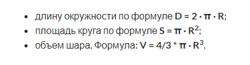
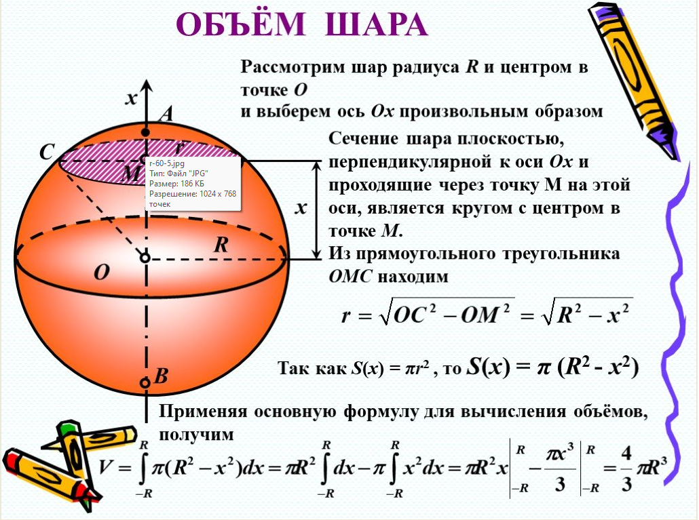
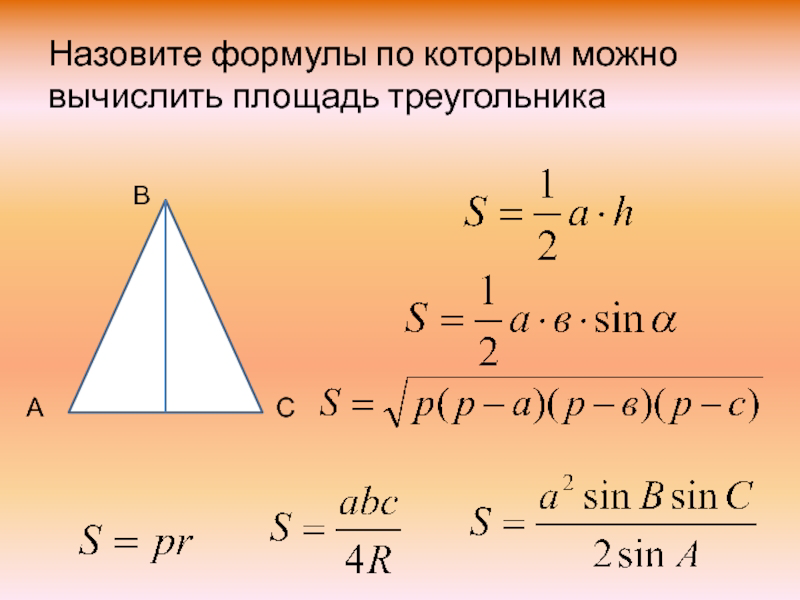
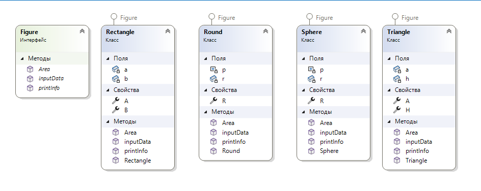

| Самостоятельная работа по теме реализация интерфейса. | ||
| Назад | ||
|
Реализовать интерфейс для определения площади и периметра фигуры:
Реализовать 2 интерфейса: первый - интерфейс FigureArea определения площади и второй определение периметра FigurePerim   
В результате получим следующую диаграмму:  Реализовать отдельно три класса по расчету фигур. В каждом классе реализовать метод ввода с клавиатуры переменных для вычислений. Отчет о выполнении работы разместить на ПК преподавателя. |
||
| Конспект подготовлен Бакулиным А. М. 2022 год. | ||